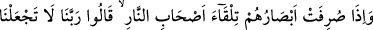
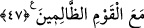

47. Gözleri cehennem ehli tarafına döndürülünce de: Ey Rabbimiz! Bizi zalimler
topluluğu ile beraber bulundurma! derler.
A’raftakilerin “gözleri cehennem ehli” yani cehennem “tarafına çevrildiği zaman
da:”
Ayette onların gözlerinin cennetliklere iliştiğinden bahsedilmeyip, cehennem halkına
baktıklarının ifade edilmesi, ilkinin rağbet ve meyil ile, ikincisinin ise bunun aksine
olduğunu hissettirmek içindir.
Zâhidî tefsirinde, bir meleğin Allah’ın emriyle onların gözlerini cehennem halkına
doğru çevirdiği kaydedilir.
Cehennemliklerin ateşte nasıl azap gördüklerini müşahede eden bu insanlar, kötü
hallerinden Allah’a sığınarak: “Ey Rabbimiz, bizi şu zalim toplulukla beraber”
cehennem ateşinde “bulundurma!” derler.” Yani, günahları sebebiyle Allah’tan
korkarak böyle dua ederler.
A’raf ehlinin kimler olduğu hakkında farklı görüşler ileri sürülmüştür. Yukarıda
zikredilen birinci görüş dışındakiler şunlardır:
2) A’raf ehli peygamberlerdir. Allah Teâlâ onları, mahşer yerinde toplanan diğer
insanlardan ayırmak için sûrun en üst kısmına oturtur. Onlar buradan cennet ve cehenem
halkına bakarlar. Onların durumlarından, sevab ve cezalarının ne kadar olduğundan
haberdar olurlar. Kendi ümmetleri hakkında da şahitlikte bulunurlar. Bu görüşe göre
‘Bunlar henüz oraya girmemişlerdir. Fakat girmeyi çok istemektedirler.’ (el-A’raf,
7/46) ifâdesinde bahsedilenler, cennet ehlidir. Çünkü mahşer halkının en şereflileri olan
peygamberlerin cennete girmek istemeleri makamlarına uygun düşmez. Peygamberler
A‘râf’ın üzerinden bakıp henüz cennete girmemiş olan, fakat girmeyi ümit eden cennet
halkına “Selam size!” diye seslenirler.
A‘râf ehli ile yüksek derece sahiplerinin kastedildiğine dâir aşağıda gelecek diğer
vecihlerde de bu şekilde takdir ve tefsir edilir.
3) A’raf ehli, şehidlerdir. Diğer insanlardan farklı olarak tâzim olunmak üzere buraya
yerleştirilmişlerdir. Onların araya konan bu sûrun yüksek yerlerine oturtulmaları, Allah
Teâlâ’nın, adaleti ve fazlı ile mahşer halkına nasıl hükmettiğine şâhid olmaları içindir.
4) A’raf ehli, kendi meşguliyetlerini bırakıp diğer insanların durumlarıyla ilgilenen
faziletli mü’minlerdir. Bir hadiste şöyle buyurulmuştur: “Kıyamet günü halk toplanınca
içlerinden bir münadi: “Fazilet ehli olanlar nerede?” diye seslenir. Süratlice cennete
doğru gitmekte olan bir grup insan kalkar ve “Fazîlet ehli, biziz.” derler.
“Faziletiniz neydi?” diye sorulunca cevaben: “Biz zulme uğrayınca sabrettik. Bize
kötülük yapılınca affettik. Bize karşı yapılan cahilce davranışlara karşı hilimle
hareket ettik.” derler. Onlara: “Girin cennete! Hayırlı işler işleyenlerin ecri ne